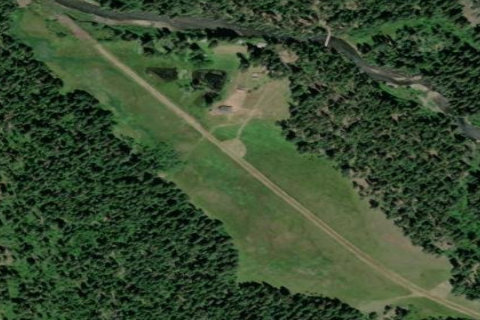

REDS WALLOWA HORSE RANCH, OR
6OR9 · OR

Aerial imagery source: Esri, Vantor, Earthstar Geographics, and the GIS User Community
| Identifier | 6OR9 |
|---|---|
| State | OR |
| Elevation | 3,600 ft |
| CTAF | 122.9 |
| Coordinates | 45.344834, -117.626916 |
Notes
[shortfield] The runway sits along the Minam River in Oregon's Eagle Cap Wilderness — a beautiful stretch of water, clear, swift, and cold, with secluded swimming holes waiting to be discovered. Ponderosa pine, Engelmann spruce, and Grand fir surround the strip, and quiet evenings are sometimes rewarded by the silent emergence of deer or elk from the forest fringe, making their way to the meadow to feed. The best camping is at the south end, near the runway threshold. On the east side, a fine spot under the trees offers welcome shade nearly all day, with an outhouse conveniently close. Directly across the runway, a culvert allows taxiing across the ditch to the west side of the meadow for those who prefer open sun throughout the day. Once privately operated for decades, the area now belongs to the USFS, with volunteer caretakers rotating through on roughly one-week stays. A visit to the main Minam Lodge building is well worth the short walk down. Caution : The Minam Lodge runway is directly north. There is a deep, unmarked ditch running the full length of the west side of the runway, completely hidden in the grass. Afternoon winds can be fierce in the heat of the day, making early morning or late afternoon/evening the preferred windows for landings and takeoffs. Though touted as a one-way strip — with the majority of landings upriver and departures downriver — when winds blow hard out of the north, skilled backcountry pilots can execute landings over the trees from the south.